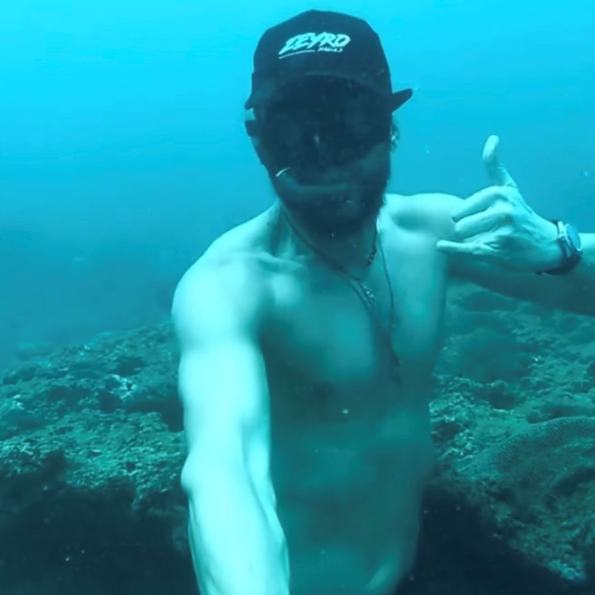
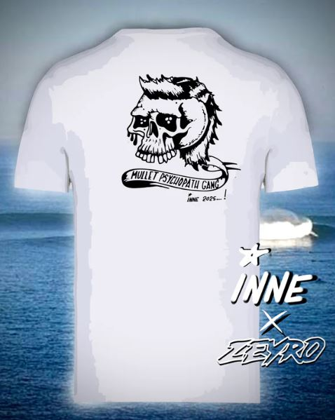
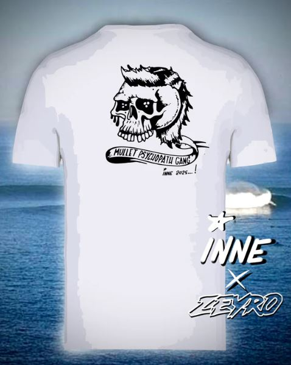
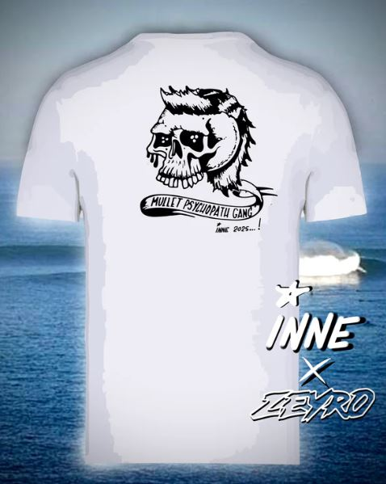

 

Punchline bien carré le saang de la veine
et mm un retour à la ligne stv

Un lancement ? Un mariage ? Ou juste l’envie de marquer le coup ?
INNE X ZEYRO, c’est pas de la série.
C’est pour celles et ceux qui veulent du fait pour. Pas du tout-fait.
T-shirts, casquettes, éditions courtes.
Petites quantités, grandes gueules.
Du style comme t’en vois pas partout.
À ton image.
À notre sauce.
Lasai. On imprime ton feu.
📸 Instagram :
@inne_laurent
@__zeyro__
📱 WhatsApp :
Inne : +33 6 66 79 20 70 Zeyro : +33 6 42 98 12 88
📧 Email :
votremail@email.com